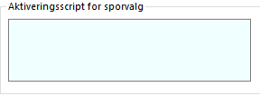

AScript
AScript er et scriptspråk for å implementere avansert logikk i ACOS Interact. Denne nettsiden gir et overblikk over viktige rutiner og formler i AScript. I utgangspunktet følger AScript JavaScript-standarden, inkludert JSON-arrayer, men med potensiale for å forkorte og forbedre en del ting.
Scriptsmuligheter i Interact
I Interact finnes det tre ulike felter hvor det er mulig å legge inn script. I alle feltene må man starte med å skrive =. Så snart man skriver = i tekstboksen, så vises valget Gå til Editor. Ved å klikke på Gå til Editor presenteres en større og mer avansert visning av området hvor man kan fortsette scriptingen.
Verdiformel
Aktiveringsscript
Krav: et aktiveringsscript må returnere true eller false. True synliggjør et element eller steg selv om det er merket som «skjult», mens False skjuler et element selv om det normal er synlig.
Valideringsscript
Krav: et valideringsscript må returnere: